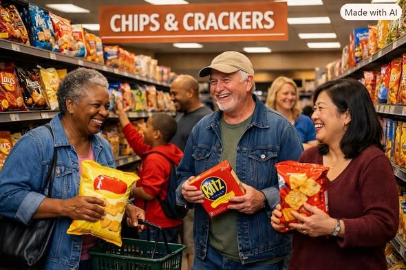

Concept image: a Terra Nova Haven where neighbors share resources freely.
The Elephant in the Room
What if the solution to poverty, hunger, homelessness, and much of our economic suffering was not simply to produce more wealth, raise more taxes, or redistribute what others have earned? What if part of the solution was to unleash the abundance that already exists?
Walk into a supermarket or warehouse. Shelves are filled with food, clothing, and household necessities. Then walk outside and see people struggling to obtain those same essentials. The contradiction is striking: we have developed remarkable systems for producing goods, but access remains unequal. That is the elephant in the room.
I. We Have Solved Much of the Production Problem
Technology has dramatically increased what people can produce. Modern agriculture, automated factories, computers, and logistics networks enable work that once required far more labor. Robotics and artificial intelligence may extend that capacity.
But production alone does not guarantee that everyone benefits. There are real constraints—land, energy, skilled labor, environmental impacts, and distribution capacity. Even so, better coordination of what we already produce can relieve needless hardship. Production creates abundance; access determines who benefits.
II. Money: The Gatekeeper to Abundance
Imagine a hungry family standing in a supermarket full of food. If they lack money, much of that food is inaccessible. The immediate barrier may not be physical supply but purchasing power.
Money is useful for coordinating complex societies. Yet it is a tool, not the purpose of civilization. We should ask where essential needs can be met without requiring a separate payment from every person at every point of access.
III. Imagine the Terra Nova Haven
Picture a community center with a sign: TERRA NOVA HAVEN — FREE TO EVERYONE. Inside are groceries, clothing, household supplies, books, and tools. People contribute what they can and take what they need, with dignity and reasonable safeguards against waste.
Initially, goods would come from voluntary donations, surplus inventory, local gardens, community partnerships, and redistribution networks. Later, participating farms and manufacturers could contribute dedicated output. The Haven would be a practical experiment in making abundance accessible—not an overnight replacement for the existing economy.
IV. A Community Without Barriers
Imagine a Martin Luther King Haven in every major city: more than a shelter or pantry, it is a place for sharing, learning, repairs, recreation, and mutual support. A retired electrician teaches a trade. A student helps an elder use technology. A restaurant donates safe surplus meals. A family shares furniture.
The same neighbor may give one week and receive the next. The purpose is not to divide people into benefactors and beneficiaries, but to build a community where everyone belongs.
V. Food, Fellowship, and Free Community Spaces
Imagine a community dining room where families and friends enjoy meals without a bill. The meals still require ingredients, safe kitchens, workers, utilities, and maintenance. Those needs must be met through transparent budgets, donations, cooperative production, volunteer support, or public and philanthropic funding.
Community kitchens and meal programs already offer partial models. The opportunity is to connect them with reliable supply and welcoming social spaces so that food nourishes both bodies and relationships.
VI. Voluntary Sharing and Property Rights
Terra Nova does not require confiscation or forced surrender of anyone’s property. Sharing works best when people and organizations choose to participate and know how their contributions will be used. Businesses can donate surplus; owners can offer space; volunteers can share skills; foundations can finance infrastructure.
Property rights, consent, accountability, and trust are not obstacles to the vision. They are among its foundations.
VII. Build the Infrastructure of Abundance
The central challenge is organization. A successful network needs inventory systems, food-safety procedures, transportation, storage, refrigeration, accessibility, volunteers, reliable staffing, and transparent governance.
Technology can help match surplus with needs, forecast demand, route deliveries, and reduce waste. But systems should respect privacy and avoid turning access to basic goods into surveillance. The goal is to make participation easy, not to create a new bureaucracy.
VIII. Start Locally, Then Scale
Begin with one neighborhood Haven, perhaps in an available storefront or community facility. Establish partnerships with grocers, farms, restaurants, local businesses, civic organizations, and residents. Measure pounds of food recovered, goods redistributed, households served, volunteer hours, operating costs, and participant satisfaction.
Learn what works. Improve the design. Publish the results. Then help neighboring communities reproduce it. A successful local pilot is more persuasive than a thousand promises.
IX. Abundance Is a Direction, Not a Magic Wand
Not every shortage is artificial. Housing requires suitable land, buildings, infrastructure, and ongoing maintenance. Medical care requires trained professionals and equipment. Food requires resilient farming and safe distribution. A world of shared abundance still needs planning, labor, stewardship, and fair ways to manage limited resources.
But these realities strengthen the case for building better systems. They tell us where work is needed; they do not excuse preventable waste and exclusion.
The Work Ahead
What if we began treating the abundance around us as a community asset instead of an accidental surplus? What if every city had places where people could give freely and receive without humiliation? What if automation increased the time and resources available for caring for one another?
The world will not change merely because we imagine it. It will change when people organize, build, contribute, measure, and improve.
We do not have to wait for a perfect moneyless society to begin. We can make more of life available outside the cash register today.
The harvest is plentiful. The laborers can become many.
There is no them. There is only us.
